| Chapter 5 | Contents | Chapter 7 |
Curve commands draw circles, arcs, and other curved images. The appearance of the lines used to draw curves depends on the write control values in effect when you use the curve command. There are four basic types of curve commands.
This chapter includes several examples of figures drawn with curve commands. These examples use the same initial write control and screen control values as the examples in Chapter 5. See "About the Examples" at the beginning of Chapter 5.
There are two options for drawing circles.
Circle with center at current cursor position,
circumference at specified position
Circle with center at specified position,
circumference at current position
For both options, the cursor position at the end of the command is the same as it was at the start. Both options can use the same four types of position arguments that you use with position (P) and vector (V) commands.
See "Set Position Arguments" in Chapter 4 for a description of these arguments.
You use the following format to draw a circle with its center at the current position and circumference at a specified position.
C<position>
where
C identifies a curve command.
<position> is a point on the circumference of the circle.
You can define a specific point on the circumference. To specify a radius, you can use a PV value or a single relative position value. To pass through a specific point, you can use one of the following position values.
| absolute | if that point has specific [X,Y] coordinates |
| relative | if that point has [X,Y] coordinates relative to the current position |
| absolute/relative | if that point has one absolute coordinate and one relative coordinate |
| pixel vector | to specify a radius |
Figure 6-1 shows examples of circles drawn with their center at the current position. The examples use different types of position arguments.
|
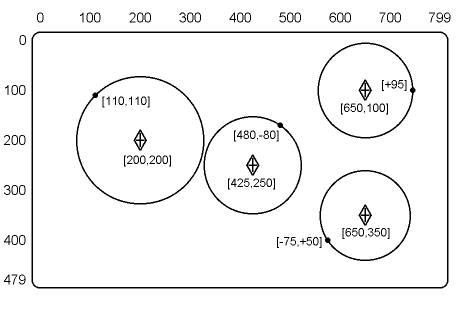 | ||
| NOTE: Only circles and final cursor would appear on screen. |
You use the following format to draw circle with its center at a specified position and circumference at the current position.
C(C)<position>
where
(C) identifies the option for a circle with center at the specified position. This option is in effect until you enter a new command.
<position> is the center of the circle. The current position becomes a point on the circumference of the circle.
This option uses the same type of position arguments as the option for a circle with its center at the current position. That is, you can use absolute, relative, absolute/relative or PV offset values to specify the center point of the circle. However, the results are different.
| current position option | Always draws a circle around the current cursor position. |
| specified position option | Draws a circle using the current cursor position as a point on the circumference. |
Figure 6-2 shows two circles drawn with their centers at specified positions. Both circles are the same size and start from the same cursor position. However, they are drawn in different places, because they have different relative position arguments.
Figure 6-3 shows more examples of circles drawn with their center at a specified position. These examples use different types of position arguments.
Figure 6-4 shows examples that combine circle with center at specified position commands with circle with center at current position commands.
|
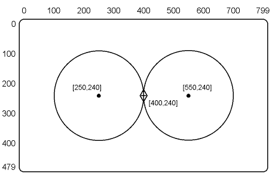 | ||
| NOTE: Only circles and cursor would appear on screen |
|
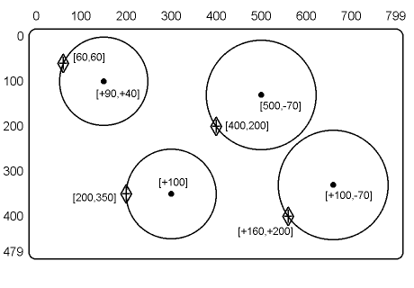 | ||
| NOTE: Only circles and final cursor would appear on screen |
|
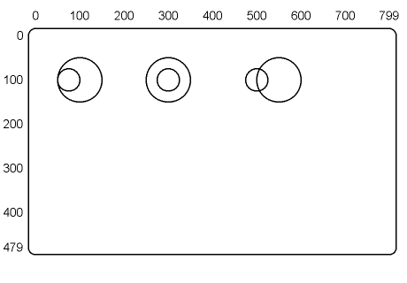 |
Arcs are sections of a circle. There are two options for drawing arcs.
Arc with center at current position, circumference at specified position
Arc with center at specified position, circumference at current position
Both options can use the same four types of position arguments used with circle options.
The VT300 draws arcs in 1 degree increments. If you specify an arc in increments other than 1 degree, ReGIS draws to the closest degree. For example, if you specify an arc of 27.5 degrees, the terminal uses 28 degrees. If you specify an arc of 27.4 degrees, the terminal uses 27 degrees.
You use the following format for drawing an arc with its center at the current cursor position and circumference at a specified position. You specify the starting point for the arc and the number of degrees to draw the arc. ReGIS uses the current cursor position as the center of the arc's circle. The cursor returns to this position at the end of this operation.
C(A<degrees>)<position>
where
A identifies the arc option. This option stays in effect until you enter a new command.
<degrees> are the number of degrees and the direction to draw the arc in. You indicate the direction with a plus (+) or minus (-) sign. If you use a + sign or no sign, ReGIS draws the arc counterclockwise from the specified position. If you use a - sign, ReGIS draws the arc clockwise.
<position> is the starting point for the arc. You can use absolute, relative, absolute/relative, or PV values for the coordinates. You can specify an X-coordinate, Y-coordinate, or both.
Figure 6-5 shows two arcs drawn with the current position option. The figure shows how positive (+) and negative (-) degree values select the direction of an arc. Figure 6-6 shows some arcs drawn with different types of position arguments.
|
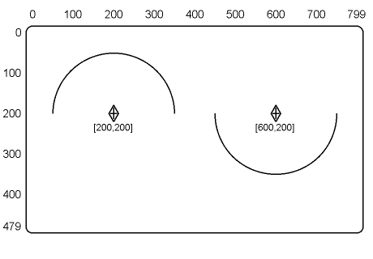 | ||
| NOTE: Only arcs and cursor at [600,200] would appear on the screen at end of commands. |
|
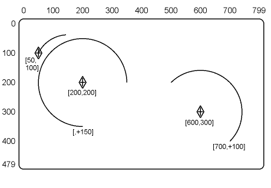 | ||
| NOTE: Only arcs and cursor at [600,300] would appear on the screen at end of commands. |
You can use this option to link the end of one arc to the beginning of another.
This option draws an arc from the current cursor position. You specify the center of the arc's circle. The cursor position moves with the arc. At the end of the option, the cursor is at the end of the arc. You use the following format for drawing an arc with its center at a specified position.
C(A<degrees>C)<position>
where
A identifies an arc option. This option stays in effect until you enter a new command.
<degrees> are the number of degrees and direction to draw the arc in. You select the direction with a plus (+) or minus (-) sign. If you use a + sign or no sign, ReGIS draws the arc counterclockwise from the specified position. If you use a - sign, ReGIS draws the arc clockwise.
The second C identifies the arc with center at specified position option.
<position> is the center of the arc. You can use absolute, relative, absolute/relative, or PV values. You can specify an X-coordinate, Y-coordinate, or both.
When you draw arcs that are not on a 10 degree boundary, the end of an arc and the cursor position may not be where you expect. There are three ways you can make sure of the cursor position.
You should use these methods occasionally when you draw arcs of other than 10 degree increments.
Figure 6-7 shows two arcs drawn with the specific position option. The figure shows how positive (+) and negative (-) degree values select the direction of an arc. Figure 6-8 shows some arcs drawn with different types of position values. The figure also shows an example of how to link arcs together.
|
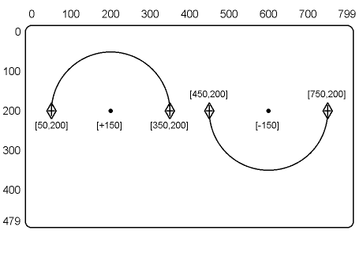 | ||
| NOTE: Only arcs and cursor at [450,200] would appear on the screen at end of commands. |
|
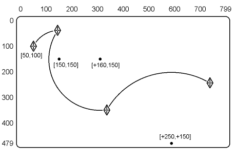 | ||
| NOTE: Only arcs and cursor at end of last arc would appear on the screen at end of commands. |
You can draw a curve by specifying four or more positions on the curve. ReGIS draws the curve by estimating where the other positions on the curve should fall. This method is called curve interpolation.
You specify the positions in one of the following sequences.
The closed curve sequence uses the same format as the bounded position stack options for position and vector commands. The open curve sequence uses the same format as the unbounded position stack options for position and vector commands. You can use a null position argument with closed and open curve sequences.
You may use a certain equation that draws curves, but ReGIS may or may not use the same equation you use. However, ReGIS does draw the curve through each point that you specify. You must use at least four positions to ensure that ReGIS draws a curve close to the equation you use. One of these positions is the cursor position at the start of the sequence.
ReGIS draws curves according to the following guidelines.
The curve passes through each point you specify.
The curve has exactly the same shape, regardless if it is drawn from the first point to the last, or from the last to the first.
The slope of the curve at a given point is parallel to a line drawn through two other points on each side of the given point.
ReGIS uses four specified positions at a time to draw a section of the curve. After using the first four positions, ReGIS moves to the next position. Then ReGIS uses that position and the previous three positions to draw the next section of the curve. This action continues until ReGIS uses all the positions you specified.
Remember that the positions you select define the curve. If you use positions that are too far apart, the curve on the screen may not reflect the function you are trying to represent.
This option lets you draw a closed curve by specifying points on the curve. At the end of the sequence, the cursor is at the position where it started the sequence. You use the following format for the closed curve sequence.
C(B)<positions>(E)
where
(B) indicates the start of the closed curve sequence.
<positions> are a minimum of two positions on the curve. ReGIS uses these positions to interpolate the rest of the curve. You can use absolute, relative, absolute/relative, or PV values. You can specify an X-coordinate, Y-coordinate, or both.
(E) indicates the end of the closed curve sequence.
Closed curve sequences use a format similar to the bounded position stack options for position and vector commands. However, you can only use one pair of (B) and end (E) options in closed curve sequences. You can use 16 pairs of (B) and (E) options in bounded position stacks for position and vector commands.
When you use relative values (including PV values), the value is relative to the last specified cursor position. For example, the first specified value is relative to the cursor position at the start of the sequence; the second specified value is relative to the first specified value, and so on.
You can use a [] null position argument to repeat the previous cursor position. Remember that the null position is the same as the [+0,+0] position. There are two reasons to use the [] null position argument in a closed curve sequence.
Close the curve with a smoother line.
You include the [] argument at the start and end of the sequence. ReGIS repeats the cursor
position at the start of the sequence, and the last position you specified.
Create a sharper change in the interpolated curve form.
You use the [] argument during the sequence. ReGIS repeats the position specified before
the [] argument.
Figure 6-9 shows a closed curve drawn with a null position argument at the start and end of the sequence. Figure 6-10 shows a closed curve drawn without the [] argument.
|
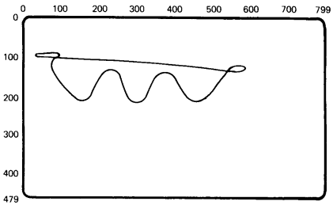 |
|
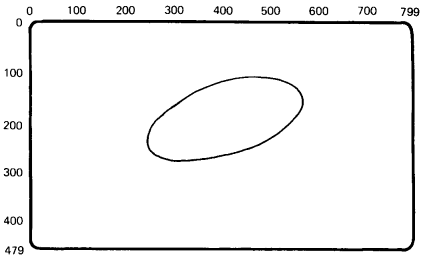 |
This option lets you draw an open curve by specifying points on the curve. At the end of the sequence, the cursor is at the last position you specified. You use the following format for the open curve sequence.
C(S)<positions>(E)
where
(S) indicates the start of an open curve sequence.
<positions> are a minimum of three positions on the curve. ReGIS uses these positions to interpolate the rest of the curve. You can use absolute, relative, absolute/relative, or PV values. You can specify an X-coordinate, Y-coordinate, or both.
(E) indicates the end of the open curve sequence.
Open curve sequences use a format similar to the unbounded position stack options for position and vector commands. However, you can only use one pair of (S) and (E) options in open curve sequences. You can use 16 pairs of (S) and (E) options in unbounded position stacks for position and vector commands.
You can use a [] null position argument to repeat the previous cursor position. There are two reasons to use the [] null position argument in an open curve sequence.
To draw the curve completely to both ends.
You use the [] argument at the beginning and end of the sequence.
This causes ReGIS to draw the curve through two more positions.
Without the [] argument, ReGIS only draws the curve from the first specified position to the next-to-last position. The [] argument duplicates the first and last positions, extending the drawing of the curve through those positions. The last two and first two positions control the direction of the curve, but ReGIS does not connect them.
Create a sharper change in the interpolated curve form.
You use the [] argument during the sequence. ReGIS repeats the position specified
before the [] argument.
Figure 6-11 shows an open curve drawn without null position arguments. Figure 6-12 shows the same curve drawn with null position arguments at the beginning and end of the sequence.
|
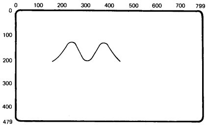 |
|
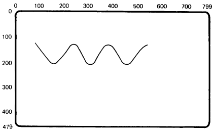 |
The write control options in Chapter 3 control the appearance of the images you draw. For example, these options control the shade/color of images. When you use curve commands, ReGIS uses the current settings for the write control options.
You can use a temporary write control option to temporarily change one or more of these settings for a curve command. The temporary values remain in effect until you use one of the following commands.
another temporary write control option
any command that begins with a command key letter, such as a vector (V) command or another curve (C) command
When you use one of the above commands, the writing control options return to their previous values.
You include the temporary write control option in your curve command. You can use any write control option from Chapter 3.
NOTE: The W option is not recommended for drawing curves. The results are unpredictable.
You use the following format for a temporary write control option.
C(W(<suboptions>))<arguments>
where
W identifies a temporary write control option.
<suboptions> are the temporary write control values to use.
<arguments> are the curve command arguments that will use the temporary write control values.
Figure 6-13 shows a simple graph that uses temporary write control options to change the pattern of open curve sequences. For more complex examples, see "Shading Control" in Chapter 3.
| 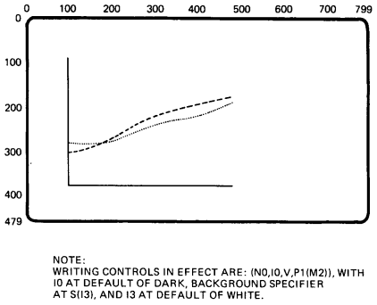 | ||
|
Table 6-1 is a summary of C command options, including any default values.
| Option* | Default | Description |
|---|---|---|
| * All [X,Y] coordinates can be absolute, relative, or absolute/relative values. | ||
| [X,Y] | None | Circle with center at current position |
| (C)[X,Y] | None | Circle with center at specified position |
| (A<degrees>)[X,Y] | 360 | Arc with center at current position <degrees> is a signed value the determines the size and direction of arc. + = counterclockwise< |
| (A<degrees>C)[X,Y] | 360 | Arc with center at specified position <degrees> is a signed value the determines the size and direction of arc. + = counterclockwise |
| (B)<positions>(E) | None | Closed curve sequence |
| (S)<positions>(E) | None | Open curve sequence |
| (W(<suboptions>)) | None | Temporary write control |